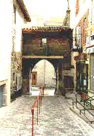
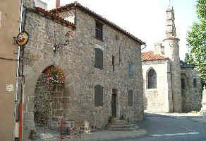
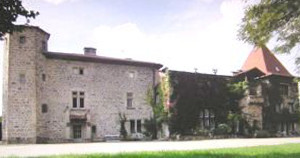
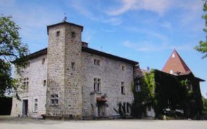
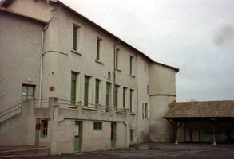
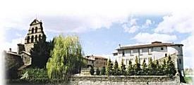

Recensement Jean-Claude Truffet
| Département | 43 — Haute-Loire |
| Canton | Monistrol-sur-Loire |
| Commune | Beauzac |
| Type d'édifice | Château |
| Période d'origine | XII-XVII |






BEAUZAC, en 1180, à Pierre de Beauzac. berceau de la famille Jourda de Vaux. En 1248, noble Pons de Beauzac, son descendant, cédait à l'évêque du Puy des Cens, rente et justice sur la ville de Bas. De 1309 à 1334, Pons de Beauzac dit Ponchot rendait hommage à l'évêque du Puy de sa part des châteaux et mandements de Beauzac et Bas. Aux Rochebaron-Usson succédèrent pour leur part, les Sémur par le mariage de Pierre avec Béatrix de Rochebaron-Usson avant 1373. Leur fille unique, Alise de Sémur apporta Beauzac en dot à Jean de Lavieu, et à la génération suivante, vers 1480, Marie de Lavieu fit de même avec Artaud III de Saint-Germain d'Apchon. Enfin Artaud IV, un degré en dessous, vendit en 1525 sa terre dite de Beauzac la Brosse, et toutes ses appartenances et droits seigneuriaux à noble Guiot de Beauzac, descendant de la famille des autres possesseurs du fief. En 1666, c'est Justine de Paturel qui était dame de Beauzac, seigneurie qu'elle apporta à son mari Jean de Cusson, seigneur de la Roue. Aux Fillière maîtres de Beauzac ,au XVIIIe siècle, passa à Armand de Colomb. Le dernier Jean De Colomb le vendit à la congrégation des surs St Joseph. Jean-François de Colomb fut le dernier seigneur de Beauzac, sous la Révolution, Adélaïde de Colomb épousa un Richond, dont les descendants vendirent le château aux religieuses de Saint Joseph, toujours propriétaires, aujourd'hui Ecole Saint-Joseph. Dans la commune le château de la Dorlière et de la Grange.
Beauzac ville fortifié en 923, le village de Beauzac est une des paroisses les plus anciennes du diocèse du Puy-en-Velay. Au XIIe siècle furent édifiés un château, ainsi que des murailles denceinte, formant ensemble un périmètre rectangulaire encore aisément reconnaissable aujourdhui . De cette ancienne place forte ont été conservés que deux porches de forme ogivale et des consoles en bois soutenant les galeries qui couronnent les façades des maisons aménagées dans les anciennes murailles. Des quatre tours plantées aux coins de la citadelle, seule reste celle du château derrière l'église. De cette place forte, ne subsiste plus que les deux portes en arc brisé, les corbeaux en bois couvrant les façades des maisons édifiées sur les anciens remparts et une tour de défense (les tours Sud-Est et Sud-Ouest ont été démolies dans les années 30). Le château de Beauzac connu de nombreux seigneurs. On peut admirer sa belle cuisine voutée et au deuxième étage une grande salle dont les solives sont ornées de peintures datées de 1567. Château de la Dorlière, corps de logis carré à trois niveaux flanqué d'une tour octogonale, à l'opposé prolongement d'habitation de même niveau se terminant d'un corps de bâtiment avec toiture en croupe.
Pierre de Beauzac
"
Porte de Beauzac, château de Dorlières et de la Grange